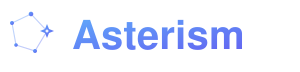

Many agents. One runtime. Separate lives.
Run distinct AI agents for work, clients, side projects, and experiments from one local install — each with its own soul, memory, secrets, skills, workspace, and autonomy level. Nothing leaks between them.
propose, notify, autonomous.See the guarantees proven end to end in the five-claims walkthrough.
Asterism runs your agents and keeps them apart; Lodestar is the layer that makes each one trustworthy — what it knows, believes, and is allowed to do.